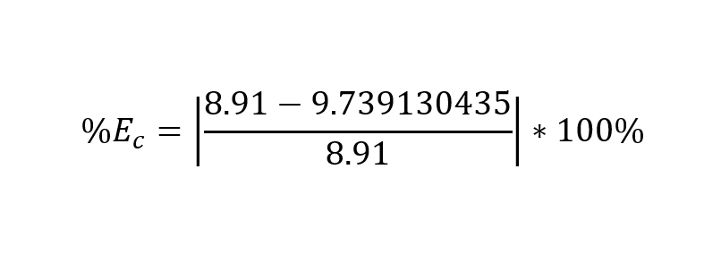

COMPUTATIONS
Cylinder's Density:
Percentage of Error:
Metal Ball's Density:

Percentage of Error:
● Become familiar with the measuring instrument commonly used in Physics Laboratory: the vernier caliper and micrometer.
● Determine the densities of various objects.
In the world of science, accurate and precise measurements are crucial. To achieve this level of precision, scientists rely on specialized tools like vernier calipers and
micrometers. In this activity, you will explore the capabilities of these instruments and delve into the concepts of accuracy and precision. Follow the procedures provided and answer the
questions at the end of this activity
1. Vernier caliper 4. Metal Cylinder
2. Micrometer 5. Metal ball
3. Triple beam balance 6. 50 mL graduated cylinder
> Measure the length and diameter of each of the given objects using the three measuring instruments with accuracy.
> Record the values on the preliminary written report sheet. Take five trials. Get the average.
> Calculate the volume of each object using the formulas below. Use the average values of length and diameter.
> Weigh each object using the triple beam balance.
> Calculate the density of each object using the formula:
ρ = m / v
> Compute the calculated values with for the standard values of densities of each object and calculate the percentage error using:
%E = (Standard Value-Calculated Value) / (Standard Value) * 100
1. Volume:
V(cylinder) = (π/4) * d²(L)
V(sphere) = (π/6) * d³
→ where: V = volume d = diameter L = length
2. Density:
ρ = m / v
→ where: ρ = density m = mass v = volume
3. Percentage of Erorr:
%E = (Standard Value-Calculated Value) / (Standard Value) * 100
| Trial | Length (cm) | Diameter (cm) |
|---|---|---|
| 1 | 2.3 cm | 1 cm |
| 2 | 2.2 cm | 1.3 cm |
| 2 | 2.4 cm | 1.1 cm |
| Average | 2.3 cm | 1.1 cm |
| Trial | Length (cm) | Diameter (cm) |
|---|---|---|
| 1 | 2 cm | 2 cm |
| 2 | 1.8 cm | 1.8 cm |
| 2 | 1.9 cm | 1.9 cm |
| Average | 1.9 cm | 1.9 cm |
| Object | Mass (m) in grams | Volume (v) in cm³ | Density (ρ) in g/cm³ | Standard Value of ρ | Percentage of Error (%E) |
|---|---|---|---|---|---|
| Mass Cylinder | 22.4 g | 2.3 cm³ | 9.73 g/cm³ | 8.91 g/cm³ | 3.3% |
| Metal Ball | 28.7 g | 3.6 cm³ | 7.97 g/cm³ | 7.64 g/cm³ | 4.35% |
‣ The accuracy of measurements using a Vernier caliper and micrometer depends on the instrument’s resolution, its calibration, and the user’s technique. A Vernier caliper can typically measure to the nearest 0.01–0.02 mm, while a micrometer can measure even smaller values, up to 0.001 mm, making it more accurate. However, if the instrument is worn out, not properly zeroed, or poorly calibrated, errors can occur. In addition, the skill of the user plays an important role, since factors like applying too much pressure, misalignment, or parallax error can affect the reading. Therefore, both the quality of the instrument and the care taken by the user determine the accuracy of measurements.
The metal ball has the greater error in its density because even a small uncertainty in measuring its diameter greatly affects the calculation of its volume, since volume depends on the cube of the radius. This larger uncertainty in volume leads to a greater overall error in the density compared to the metal cylinder.
In this activity, we learned how to accurately measure objects using the Vernier caliper, micrometer, and ruler. By performing multiple trials, we reduced random errors and obtained more reliable average measurements. From these values, we calculated the volume, density, and percentage error of different objects. The results showed that small mistakes in measuring dimensions, especially diameter, can cause significant errors in density calculations. This highlights the importance of careful handling of instruments, precise readings, and repeated trials to minimize uncertainty and improve accuracy.